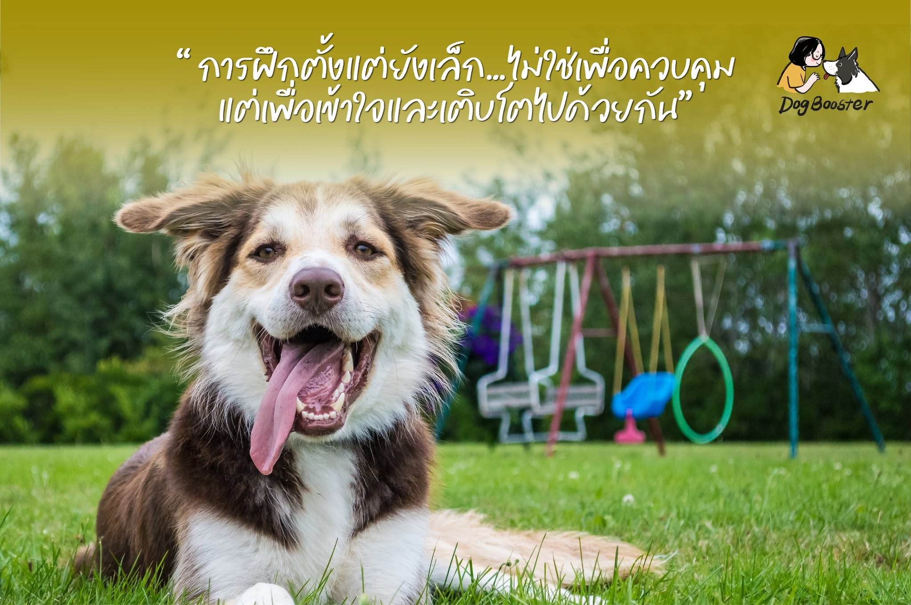

หลายคนมักรอให้หมาโต… ถึงค่อยเริ่มฝึก 🐶 แต่ความจริงคือ ช่วงวัยลูกหมานี่แหละ คือช่วงที่หัวใจของเขา “เปิดรับ” เราได้มากที่สุด
เขายังเหมือนผ้าขาวที่พร้อมจะเติบโตขึ้น ตามนิสัยที่เขาสะสมในทุกวัน และแน่นอนว่า ถ้าเราไม่ตั้งใจสร้างนิสัยตั้งแต่วันนี้ สิ่งที่เขาเรียนรู้ไป อาจไม่ใช่สิ่งที่เราอยากให้เป็น
เพื่อให้เขาเติบโตขึ้นเป็นหมาที่เราภูมิใจ และอยู่ด้วยแล้วสบายใจ
ไม่ใช่แค่ “เปลี่ยนนิสัยให้ดี” แต่ยังช่วยสร้างสายใยบางอย่าง ที่ทำให้เรากับเขา “เข้าใจกันมากขึ้นในทุกวัน” และยิ่งเราฝึกเร็วเท่าไหร่ เขาก็จะมีนิสัยดี และประสบการณ์ดีติดตัวไปจนโต